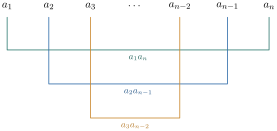
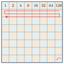
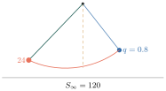

- កំណត់និយមន័យនិងផលធៀបរួមនៃស្វ៊ីតធរណីមាត្រ
- កំណត់តួទី \(\displaystyle n\) នៃស្វ៊ីតធរណីមាត្រ
- បង្ហាញផលគុណតួស្មើចម្ងាយពីតួចុង
- គណនាផលបូកតួនៃស្វ៊ីតធរណីមាត្រ
- គណនាផលបូកតួនៃស្វ៊ីតធរណីមាត្រអនន្តតួ ។
1. និយមន័យស្វ៊ីតធរណីមាត្រ
ឧទាហរណ៍ : ស្វ៊ីត \(\displaystyle 2, 6, 18, 54, 162, \dots\) មាន \(\displaystyle a_2 = a_1\times3\), \(\displaystyle a_3 = a_2\times3\), \(\displaystyle a_4 = a_3\times3\), \(\displaystyle a_5 = a_4\times3\) ។ តួនីមួយៗ (ក្រៅពីតួទី 1) ស្មើតួមុនគុណចំនួនថេរ (\(\displaystyle 3\)) ហៅថា ផលធៀបរួម ។ ស្វ៊ីតនេះហៅថា ស្វ៊ីតធរណីមាត្រ ។
និយមន័យ : ស្វ៊ីតធរណីមាត្រគឺជាស្វ៊ីតនៃចំនួនពិតដែលតួនីមួយៗ (ក្រៅពីតួទី 1) ស្មើនឹងតួមុនគុណនឹងចំនួនថេរ \(\displaystyle q \ne 0\) ហៅថា ផលធៀបរួម ។
2. តួទី n នៃស្វ៊ីតធរណីមាត្រ
ឧទាហរណ៍ : ស្វ៊ីត \(\displaystyle 2, 6, 18, 54, 162, \dots\) មាន \(\displaystyle a_3 = 2\times3^2\), \(\displaystyle a_4 = 2\times3^3\), \(\displaystyle a_5 = 2\times3^4\), \(\displaystyle \dots\), \(\displaystyle a_n = 2\times3^{n-1}\) ។
: តួទី \(\displaystyle n\) នៃស្វ៊ីតធរណីមាត្រ \(\displaystyle a_n = a_1\times q^{n-1}\) ។
ស្វ៊ីតធរណីមាត្រ \(\displaystyle 6, 12, 24, 48, \dots\) ។ ក. គណនាតួទី \(\displaystyle 14\) ខ. តើ \(\displaystyle 384\) ជាតួទីប៉ុន្មាន ?
\(\displaystyle q = \frac{12}6 = 2\) ។ ក. \(\displaystyle a_{14} = 6\times2^{13} = 6\times8192 = 49152\) ។ ខ. \(\displaystyle 384 = 6\times2^{n-1}\) ឱ្យ \(\displaystyle 64 = 2^{n-1}\) ហើយ \(\displaystyle n - 1 = 6\) : \(\displaystyle 384\) ជាតួទី \(\displaystyle 7\) ។
ប្រជាជនទីក្រុងមួយមាន \(\displaystyle 2\) លាននាក់ក្នុងឆ្នាំ \(\displaystyle 2000\) ហើយកើន \(\displaystyle 4\%\) ក្នុងមួយឆ្នាំ ។ បង្ហាញថាចំនួនប្រជាជនប្រចាំឆ្នាំជាស្វ៊ីតធរណីមាត្រ ហើយព្យាករចំនួនប្រជាជនឆ្នាំ \(\displaystyle 2009\) ។
\(\displaystyle a_1 = 2\), \(\displaystyle a_2 = 2(1.04)\), \(\displaystyle a_3 = 2(1.04)^2\), \(\displaystyle \dots\) : ជាស្វ៊ីតធរណីមាត្រ \(\displaystyle q = 1.04\) ។ ឆ្នាំ \(\displaystyle 2009\) ជាតួទី \(\displaystyle 10\) : \(\displaystyle a_{10} = 2(1.04)^9 \approx 2.846624\) លាននាក់ ឬ \(\displaystyle 2\,846\,624\) នាក់ ។
1. ស្វ៊ីតធរណីមាត្រ \(\displaystyle 3, 12, 48, 192, \dots\) ៖ ក. គណនាតួទី \(\displaystyle 9\) ខ. តើ \(\displaystyle 12288\) ជាតួទីប៉ុន្មាន ? 2. គ្រួសារមួយដាក់ប្រាក់ \(\displaystyle 100\,000\) រៀលក្នុងធនាគារ ដោយទទួលការប្រាក់សមាស \(\displaystyle 6\%\) ក្នុងមួយឆ្នាំ (ទូទាត់មួយឆ្នាំម្តង) ។ ក. កំណត់ប្រាក់សរុបនៅចុងឆ្នាំនីមួយៗនៃបួនឆ្នាំដំបូង និងនៅចុងឆ្នាំទី \(\displaystyle n\) ខ. កំណត់ប្រាក់សរុបនៅចុងឆ្នាំទី \(\displaystyle 21\) ។
មើលចម្លើយ
1. ក. \(\displaystyle a_9 = 3\times4^8 = 196608\) ខ. \(\displaystyle a_7 = 12288\) ។ 2. ក. \(\displaystyle 106\,000\) ; \(\displaystyle 112\,360\) ; \(\displaystyle 119\,101.6\) ; \(\displaystyle 126\,247.696\) ហើយ \(\displaystyle a_n = 100\,000(1.06)^n\) ខ. \(\displaystyle a_{21} \approx 339\,956.36\) រៀល ។
3. ផលគុណតួស្មើចម្ងាយពីតួចុង
ឧទាហរណ៍ : ក្នុងស្វ៊ីតធរណីមាត្រ \(\displaystyle a_1, \dots, a_6\) ៖ \(\displaystyle a_1 a_6 = a_1^2 q^5\), \(\displaystyle a_2 a_5 = a_1 q\cdot a_1 q^4 = a_1^2 q^5\), \(\displaystyle a_3 a_4 = a_1 q^2\cdot a_1 q^3 = a_1^2 q^5\) ដូច្នេះ \(\displaystyle a_1 a_6 = a_2 a_5 = a_3 a_4\) ។

: \(\displaystyle a_p\times a_{n-p+1} = a_1\times a_n\) (ផលគុណតួស្មើចម្ងាយពីតួចុង ស្មើផលគុណតួចុង) ។
ករណីពិសេស : បីចំនួនតគ្នា \(\displaystyle a, b, c\) ជាស្វ៊ីតធរណីមាត្រ លុះត្រាតែ \(\displaystyle b^2 = ac\) ; \(\displaystyle b = \sqrt{ac}\) ហៅថាមធ្យមធរណីមាត្រនៃ \(\displaystyle a\) និង \(\displaystyle c\) ។
\(\displaystyle a, b, c\) ជាស្វ៊ីតធរណីមាត្រ ។ បង្ហាញថា \(\displaystyle a^2, b^2, c^2\) ក៏ជាស្វ៊ីតធរណីមាត្រ ។ ដំណោះស្រាយ \(\displaystyle b^2 = ac\) ដូច្នេះ \(\displaystyle (b^2)^2 = (ac)^2 = a^2c^2\) ។
ក. បន្ថែមចំនួនប៉ុន្មានទៅ \(\displaystyle 3, 24, 94\) ដើម្បីឱ្យបីចំនួនជាស្វ៊ីតធរណីមាត្រ ? ខ. រកមធ្យមធរណីមាត្រនៃ \(\displaystyle 4\) និង \(\displaystyle 9\) ។ គ. ស្វ៊ីតធរណីមាត្រមួយមាន \(\displaystyle a_3 = 4\) និង \(\displaystyle a_5 = 36\) ។ គណនា \(\displaystyle a_1\) និង \(\displaystyle q\) ។
មើលចម្លើយ
ក. \(\displaystyle (24 + x)^2 = (3 + x)(94 + x)\) ឱ្យ \(\displaystyle x = 6\) (ពិនិត្យ \(\displaystyle 30^2 = 9\times100\)) ខ. \(\displaystyle \sqrt{4\times9} = 6\) គ. \(\displaystyle q^2 = 9\) : \(\displaystyle q = 3\) ឬ \(\displaystyle q = -3\) ហើយ \(\displaystyle a_1 = \frac49\) ។
4. ផលបូក n តួដំបូងនៃស្វ៊ីតធរណីមាត្រ
ឧទាហរណ៍ : \(\displaystyle S = 1 + 2 + 4 + 8 + 16 + 32 + 64\) ។ \(\displaystyle 2S = 2 + 4 + \dots + 128\) ។ \(\displaystyle 2S - S = 128 - 1\) ដូច្នេះ \(\displaystyle S = 127\) ។
ជាទូទៅ \(\displaystyle S_n = a_1 + a_1 q + \dots + a_1 q^{n-1}\) ។ \(\displaystyle qS_n - S_n = a_1 q^n - a_1\) ឱ្យ \(\displaystyle (q - 1)S_n = a_1(q^n - 1)\) ។
: បើ \(\displaystyle q \ne 1\) នោះ \(\displaystyle \displaystyle S_n = \frac{a_1(q^n - 1)}{q - 1}\) (បើ \(\displaystyle q = 1\) នោះ \(\displaystyle S_n = na_1\)) ។ (សៀវភៅបោះពុម្ពសរសេរ \(\displaystyle q \ne 0\) ក្នុងមេរៀនសង្ខេប ជាកំហុស ។)
ក. គណនាផលបូក \(\displaystyle 7\) តួដំបូងនៃ \(\displaystyle 5 + 10 + 20 + 40 + \dots\) ខ. គណនា \(\displaystyle 2 + 6 + 18 + \dots + 1458\) ។
ក. \(\displaystyle S_7 = \dfrac{5(2^7 - 1)}{2 - 1} = 635\) ។ ខ. \(\displaystyle 1458 = 2\times3^{n-1}\) ឱ្យ \(\displaystyle 3^{n-1} = 729 = 3^6\) ហើយ \(\displaystyle n = 7\) : \(\displaystyle S_7 = \dfrac{2(3^7 - 1)}{3 - 1} = 2186\) ។
ស្តេចឥណ្ឌាម្នាក់បញ្ជាឱ្យជាងធ្វើក្តារចត្រង្គ ហើយជាងសុំគ្រាប់ស្រូវ ៖ ១ គ្រាប់ក្នុងក្រឡាទី \(\displaystyle 1\), ២ គ្រាប់ក្នុងក្រឡាទី \(\displaystyle 2\), ៤ គ្រាប់ក្នុងក្រឡាទី \(\displaystyle 3\), … ចំនួនគ្រាប់ក្នុងក្រឡាបន្ទាប់ស្មើក្រឡាមុនគុណ \(\displaystyle 2\) ។ គណនាផលបូកគ្រាប់ស្រូវក្នុងក្រឡាទាំង \(\displaystyle 64\) ។

ស្វ៊ីតធរណីមាត្រ \(\displaystyle 1, 2, 4, 8, \dots\) មាន \(\displaystyle a_1 = 1\), \(\displaystyle q = 2\) ។ \(\displaystyle S_{64} = 2^{64} - 1 = 18\,446\,744\,073\,709\,551\,615\) គ្រាប់ ។ ស្រូវ \(\displaystyle 37\,000\) គ្រាប់ប្រហែល \(\displaystyle 1\) kg ដូច្នេះ \(\displaystyle 1\) តោនប្រហែល \(\displaystyle 3.7\times10^7\) គ្រាប់ ហើយស្រូវទាំងអស់ប្រហែល \(\displaystyle 4986\times10^8\) តោន ; ចំណែកទិន្នផលស្រូវប្រចាំឆ្នាំរបស់កម្ពុជាប្រហែល \(\displaystyle 5\times10^6\) តោនប៉ុណ្ណោះ ។
1. ស្វ៊ីតធរណីមាត្រ \(\displaystyle 6, 3, 1.5, 0.75, \dots\) ៖ ក. តួទី \(\displaystyle 7\) ខ. ផលបូក \(\displaystyle 7\) តួដំបូង ។ 2. គណនា \(\displaystyle S_n = 7 + 77 + 777 + \dots\) (\(\displaystyle n\) តួ ដែលតួចុងមាន \(\displaystyle n\) ដងលេខ \(\displaystyle 7\)) ។ 3. លោក \(\displaystyle B\) ដាក់ \(\displaystyle 100\$\) ទៅគណនីសន្សំ ដោយទទួលការប្រាក់សមាស \(\displaystyle 10\%\) ក្នុងមួយឆ្នាំ (ទូទាត់មួយខែម្តង) ។ ប្រាក់សរុបនៅចុងឆ្នាំទី \(\displaystyle 5\) គឺ \(\displaystyle A = 100(1 + \frac{0.10}{12}) + 100(1 + \frac{0.10}{12})^2 + \dots + 100(1 + \frac{0.10}{12})^{60}\) ។ គណនា \(\displaystyle A\) ។ 4. ប៉ោលមួយយោលដំបូងបានប្រវែងធ្នូ \(\displaystyle 18\) cm ហើយម្តងៗសល់ \(\displaystyle 95\%\) នៃប្រវែងធ្នូមុន ។ ក. កំណត់ប្រវែងធ្នូលើកទី \(\displaystyle 10\) ខ. រកប្រវែងធ្នូសរុបក្រោយយោល \(\displaystyle 15\) ដង ។
មើលចម្លើយ
1. ក. \(\displaystyle a_7 = \frac3{32}\) ខ. \(\displaystyle S_7 = \frac{381}{32}\) ។ 2. \(\displaystyle 7(1 + 11 + 111 + \dots) = \frac79(10 + 10^2 + \dots + 10^{n} - n)\) ឱ្យ \(\displaystyle S_n = \frac7{81}(10^{n+1} - 9n - 10)\) ។ 3. \(\displaystyle A \approx 7808.24\) (សៀវភៅបោះពុម្ព \(\displaystyle 7808.23\) ជាការកាត់ខ្ទង់) ។ 4. ក. \(\displaystyle a_{10} = 18(0.95)^9 \approx 11.34\) cm ខ. \(\displaystyle S_{15} = 18\cdot\frac{1 - 0.95^{15}}{0.05} \approx 193.22\) cm (សៀវភៅ \(\displaystyle 193.21\)) ។
5. ស្វ៊ីតធរណីមាត្រអនន្តតួ
ឧទាហរណ៍ : \(\displaystyle 18 + 1.8 + 0.18 + \dots\) មាន \(\displaystyle a_1 = 18\), \(\displaystyle q = \frac1{10}\) ។ \(\displaystyle S_2 = 19.8\), \(\displaystyle S_3 = 19.98\), \(\displaystyle S_4 = 19.998\), … ដូច្នេះ \(\displaystyle S_n\) ខិតជិត \(\displaystyle 20\) កាលណា \(\displaystyle n\) ធំ ។
តាម \(\displaystyle S_n = \dfrac{a_1 q^n}{q - 1} - \dfrac{a_1}{q - 1}\) បើ \(\displaystyle |q| < 1\) នោះ \(\displaystyle q^n \to 0\) ហើយ \(\displaystyle S_n \to \dfrac{a_1}{1 - q}\) ។
: បើ \(\displaystyle |q| < 1\) នោះ \(\displaystyle S_\infty = a_1 + a_1 q + a_1 q^2 + \dots = \dfrac{a_1}{1 - q}\) ។ បើ \(\displaystyle |q| \ge 1\) នោះមិនអាចកំណត់ \(\displaystyle S_\infty\) បានទេ ។
\(\displaystyle 6 + 2 + \frac23 + \frac29 + \dots\) ៖ \(\displaystyle a_1 = 6\), \(\displaystyle q = \frac13\) ដូច្នេះ \(\displaystyle S_\infty = \dfrac{6}{1 - 1/3} = 9\) ។
សរសេរ \(\displaystyle 4.\overline{57}\) ជាប្រភាគ ។ ដំណោះស្រាយ \(\displaystyle 4.\overline{57} = 4 + 0.57 + 0.0057 + \dots = 4 + \dfrac{0.57}{1 - 0.01} = 4 + \dfrac{57}{99} = \dfrac{453}{99}\) ។
គេយោលប៉ោលមួយ ។ លើកដំបូងបានធ្នូប្រវែង \(\displaystyle 24\) dm ហើយធ្នូថយចុះ \(\displaystyle 20\%\) ជាបន្តបន្ទាប់ ។ កំណត់ប្រវែងគន្លងសរុបពីដំបូងដល់ពេលវាឈប់ ។

\(\displaystyle a_1 = 24\), \(\displaystyle q = 0.8\) : \(\displaystyle S_\infty = \dfrac{24}{1 - 0.8} = 120\) dm ។
ក. គណនា \(\displaystyle 16 + 12 + 9 + \dots\) ខ. សរសេរ \(\displaystyle 0.\overline{235}\) ជាប្រភាគ ។
មើលចម្លើយ
ក. \(\displaystyle q = \frac34\) : \(\displaystyle S_\infty = 64\) ។ ខ. \(\displaystyle 0.\overline{235} = \frac{235}{999}\) ។
លំហាត់
- កំណត់ផលធៀបរួម ហើយសរសេរបួនតួបន្ទាប់ ៖ ក. \(\displaystyle 4, 20, 100, 500, \dots\) ខ. \(\displaystyle \sqrt2, 2, 2\sqrt2, 4, \dots\) ។
- ស្វ៊ីតធរណីមាត្រ \(\displaystyle 2, 6, 18, 54, \dots\) ។ ក. គណនាតួទី \(\displaystyle 7\) ខ. \(\displaystyle 39366\) ជាតួទីប៉ុន្មាន ? គ. គណនាផលបូក \(\displaystyle 15\) តួដំបូង ។
- កំណត់ចំនួនតួ ៖ ក. \(\displaystyle 1, 2, 4, 8, \dots, 8192\) ខ. \(\displaystyle 20, 10, 5, \frac52, \dots, \frac5{256}\) ។
- បង្ហាញថាស្វ៊ីតជាស្វ៊ីតធរណីមាត្រ ៖ ក. \(\displaystyle a_n = 7\times3^{n-1}\) ខ. \(\displaystyle a_{n+1} = \frac18\times4^n\) ។
- \(\displaystyle (a_n)\) ជាស្វ៊ីតធរណីមាត្រ ។ ក. \(\displaystyle a_3 = 18\), \(\displaystyle a_7 = 1458\) : គណនា \(\displaystyle q\) និង \(\displaystyle a_{10}\) ។ ខ. \(\displaystyle a_3 = 20\), \(\displaystyle a_6 = 1280\) : គណនា \(\displaystyle q\) និង \(\displaystyle a_1\) ។ គ. \(\displaystyle a_1 = 3\), \(\displaystyle S_3 = 21\) : គណនា \(\displaystyle q\) និង \(\displaystyle S_7\) ។
- គណនា ក. \(\displaystyle 48 + 24 + 12 + \dots + \frac38\) ខ. \(\displaystyle \frac13 + 1 + 3 + \dots + 6561\) គ. \(\displaystyle 9 - 6 + 4 - \dots - \frac{128}{243}\) (សៀវភៅបោះពុម្ព \(\displaystyle \frac{128}{244}\) ជាកំហុស) ឃ. \(\displaystyle 1 - \frac12 + \frac1{3^2} - \frac1{2^3} + \frac1{3^4} - \frac1{2^5} + \dots - \frac1{2^{2n-1}} + \frac1{3^{2n}}\) ។
- គណនាផលបូកស្វ៊ីតធរណីមាត្រអនន្តតួដែល \(\displaystyle a_2 = -9\) និង \(\displaystyle a_5 = \frac13\) ។
- គណនាផលធៀបរួមនៃស្វ៊ីតធរណីមាត្រអនន្តតួដែល \(\displaystyle a_1 = 5\) និង \(\displaystyle S_\infty = 15\) ។
- ផលបូកពីរតួដំបូងនៃស្វ៊ីតធរណីមាត្រស្មើ \(\displaystyle 9\) ហើយផលបូកអនន្តតួស្មើ \(\displaystyle 25\) ។ គណនា \(\displaystyle q\) និង \(\displaystyle a_1\) បើ \(\displaystyle q > 0\) ។
- សរសេរជាប្រភាគ ក. \(\displaystyle 0.\overline7\) ខ. \(\displaystyle 2.\overline{34}\) គ. \(\displaystyle 0.\overline{452}\) ។
លំហាត់ជំពូក 1
- តួទី \(\displaystyle 5\) នៃស្វ៊ីតនព្វន្តស្មើ \(\displaystyle 14\) និងតួទី \(\displaystyle 12\) ស្មើ \(\displaystyle 35\) ។ គណនាផលសងរួម តួទី \(\displaystyle 1\) និងតួទី \(\displaystyle n\) ។
- \(\displaystyle S_n = n^2 + n\) ។ គណនាតួទី \(\displaystyle 5\) ហើយបង្ហាញថាស្វ៊ីតជាស្វ៊ីតនព្វន្ត ។
- តួទី \(\displaystyle 3\) នៃស្វ៊ីតធរណីមាត្រស្មើ \(\displaystyle 3\) និងតួទី \(\displaystyle 6\) ស្មើ \(\displaystyle \frac38\) ។ គណនាផលធៀបរួម តួទី \(\displaystyle 1\) និងផលបូក \(\displaystyle 8\) តួដំបូង ។
- គណនា \(\displaystyle a\) ដើម្បីឱ្យ \(\displaystyle (a - 3)\), \(\displaystyle (a + 1)\) និង \(\displaystyle (4a - 2)\) ជាបីតួតគ្នានៃស្វ៊ីតធរណីមាត្រ ។
- បួនចំនួនជាស្វ៊ីតធរណីមាត្រ តួទី \(\displaystyle 1\) ស្មើ \(\displaystyle 6\) ហើយតួទី \(\displaystyle 4\) ស្មើ \(\displaystyle 162\) ។ គណនាតួទី \(\displaystyle 2\) និងទី \(\displaystyle 3\) ។
- ផ្ទះមួយតម្លៃ \(\displaystyle 30\,000\) ដុល្លារ ។ អ្នកទិញបង់ជា \(\displaystyle 6\) ដំណាក់កាលដែលជាស្វ៊ីតធរណីមាត្រមានផលធៀបរួម \(\displaystyle \frac9{10}\) ។ កំណត់ប្រាក់ដែលត្រូវបង់ក្នុងដំណាក់កាលនីមួយៗ ។
- \(\displaystyle (U_n)\) និង \(\displaystyle (V_n)\) ជាស្វ៊ីតនព្វន្ត ៖ \(\displaystyle U_1 = 3\), \(\displaystyle d = 3\) ; \(\displaystyle V_1 = 4\), \(\displaystyle d = 2\) ។ ក. កំណត់ \(\displaystyle U_n\) និង \(\displaystyle V_n\) ។ ខ. \(\displaystyle W_n = \frac{U_n}{V_n}\) : បង្ហាញថា \(\displaystyle (W_n)\) កើន ហើយកំណត់ \(\displaystyle n\) ដែល \(\displaystyle W_n - W_{n-1} = \frac1{28}\) ។
- ស្វ៊ីតនព្វន្តកើន \(\displaystyle (U_n)\) មាន \(\displaystyle U_1^2 + U_2^2 + U_3^2 = 98\) និង \(\displaystyle U_1 - U_2 + U_3 = 4\) ។ កំណត់ផលសងរួម \(\displaystyle U_1\) ហើយគណនា \(\displaystyle U_{10}\) និង \(\displaystyle S_{10}\) ។
- ស្វ៊ីតធរណីមាត្រមាន \(\displaystyle a_1 = 3\) និង \(\displaystyle |r| < 1\) ។ ផលបូក \(\displaystyle 3\) តួដំបូងស្មើ \(\displaystyle \frac89\) នៃផលបូក \(\displaystyle 6\) តួដំបូង ។ គណនាផលបូកអនន្តតួ ។
- \(\displaystyle 3x^2 - 8x + 4 = 0\) \(\displaystyle (E)\) ។ 1. ដោះស្រាយក្នុង \(\displaystyle \mathbb{R}\) ។ 2. \(\displaystyle (U_n)\) ជាស្វ៊ីតធរណីមាត្រកើនដែល \(\displaystyle U_3\) និង \(\displaystyle U_4\) ជាចម្លើយនៃ \(\displaystyle (E)\) ។ ក. រកផលធៀបរួម ខ. គណនា \(\displaystyle U_1\) ។
ចម្លើយលំហាត់
- ក. \(\displaystyle q = 5\) : \(\displaystyle 2500, 12500, 62500, 312500\) ខ. \(\displaystyle q = \sqrt2\) : \(\displaystyle 4\sqrt2, 8, 8\sqrt2, 16\) ។
- ក. \(\displaystyle 1458\) ខ. \(\displaystyle n = 10\) គ. \(\displaystyle S_{15} = 3^{15} - 1 = 14\,348\,906\) ។
- ក. \(\displaystyle 14\) តួ ខ. \(\displaystyle 11\) តួ (\(\displaystyle q = \frac12\)) ។
- ក. \(\displaystyle \frac{a_{n+1}}{a_n} = 3\) ខ. \(\displaystyle a_n = \frac18\cdot4^{n-1}\) ហើយ \(\displaystyle \frac{a_{n+1}}{a_n} = 4\) ។
- ក. \(\displaystyle q = \pm3\), \(\displaystyle a_1 = 2\), \(\displaystyle a_{10} = \pm39366\) ខ. \(\displaystyle q = 4\), \(\displaystyle a_1 = \frac54\) គ. \(\displaystyle q = 2\) (\(\displaystyle S_7 = 381\)) ឬ \(\displaystyle q = -3\) (\(\displaystyle S_7 = 1641\)) ។
- ក. \(\displaystyle \frac{765}8\) ខ. \(\displaystyle \frac{29524}3\) គ. \(\displaystyle \frac{1261}{243}\) ឃ. \(\displaystyle \frac98\left(1 - \frac1{9^{n+1}}\right) - \frac23\left(1 - \frac1{4^n}\right)\) ។
- \(\displaystyle q = -\frac13\), \(\displaystyle a_1 = 27\) : \(\displaystyle S_\infty = \frac{81}4\) ។
- \(\displaystyle q = \frac23\) ។
- \(\displaystyle q = \frac45\), \(\displaystyle a_1 = 5\) ។
- ក. \(\displaystyle \frac79\) ខ. \(\displaystyle \frac{232}{99}\) គ. \(\displaystyle \frac{452}{999}\) ។
ចម្លើយលំហាត់ជំពូក 1
- \(\displaystyle d = 3\), \(\displaystyle a_1 = 2\), \(\displaystyle a_n = 3n - 1\) ។
- \(\displaystyle a_5 = S_5 - S_4 = 10\) ; \(\displaystyle a_n = S_n - S_{n-1} = 2n\) (\(\displaystyle a_1 = S_1 = 2\)) ជាស្វ៊ីតនព្វន្ត \(\displaystyle d = 2\) ។
- \(\displaystyle q = \frac12\), \(\displaystyle a_1 = 12\), \(\displaystyle S_8 = \frac{765}{32}\) ។
- \(\displaystyle (a + 1)^2 = (a - 3)(4a - 2)\) ឱ្យ \(\displaystyle 3a^2 - 16a + 5 = 0\) ហើយ \(\displaystyle a = 5\) ឬ \(\displaystyle a = \frac13\) ។
- \(\displaystyle q = 3\) : តួទី \(\displaystyle 2\) ស្មើ \(\displaystyle 18\) តួទី \(\displaystyle 3\) ស្មើ \(\displaystyle 54\) ។
- \(\displaystyle a_1 \approx 6402.61\) ដូច្នេះ \(\displaystyle 6402.61;\ 5762.35;\ 5186.11;\ 4667.50;\ 4200.75;\ 3780.68\) ដុល្លារ ។
- ក. \(\displaystyle U_n = 3n\), \(\displaystyle V_n = 2n + 2\) ខ. \(\displaystyle W_n - W_{n-1} = \frac3{2n(n+1)} > 0\) ; \(\displaystyle n(n+1) = 42\) ឱ្យ \(\displaystyle n = 6\) ។
- \(\displaystyle U_2 = 4\) ; \(\displaystyle d = 5\) ; \(\displaystyle U_1 = -1\) ; \(\displaystyle U_{10} = 44\) ; \(\displaystyle S_{10} = 215\) ។
- \(\displaystyle 1 + r^3 = \frac98\) ឱ្យ \(\displaystyle r = \frac12\) ; \(\displaystyle S_\infty = 6\) ។
- 1. \(\displaystyle x = 2\) ឬ \(\displaystyle x = \frac23\) ។ 2. \(\displaystyle U_3 = \frac23\), \(\displaystyle U_4 = 2\) : ក. \(\displaystyle q = 3\) ខ. \(\displaystyle U_1 = \frac2{27}\) ។
ខ្លឹមសារ៖ សៀវភៅពុម្ពគណិតវិទ្យាថ្នាក់ទី១១ របស់ក្រសួងអប់រំ យុវជន និងកីឡា · វាយអត្ថបទ គូររូបភាពឡើងវិញ និងរៀបចំលើអនឡាញដោយលោកគ្រូ សាន សុខលី សម្រាប់ការសិក្សាដោយឥតគិតថ្លៃ និងមិនរកប្រាក់ចំណេញ។ មិនមែនជាការបោះពុម្ពផ្លូវការរបស់ក្រសួងទេ។